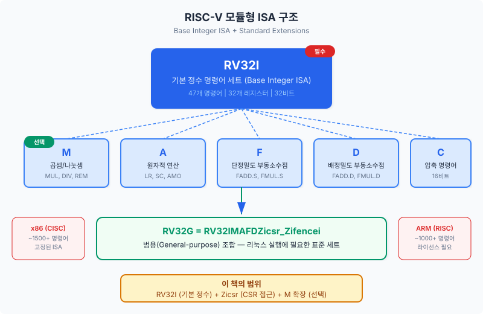
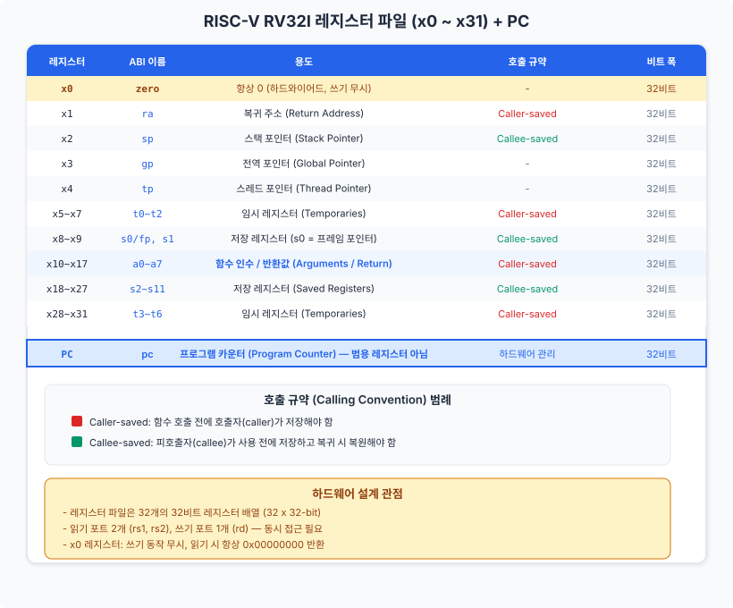
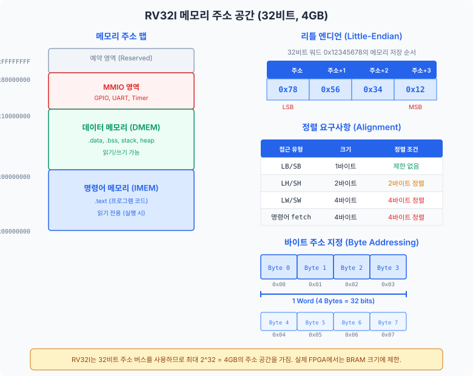
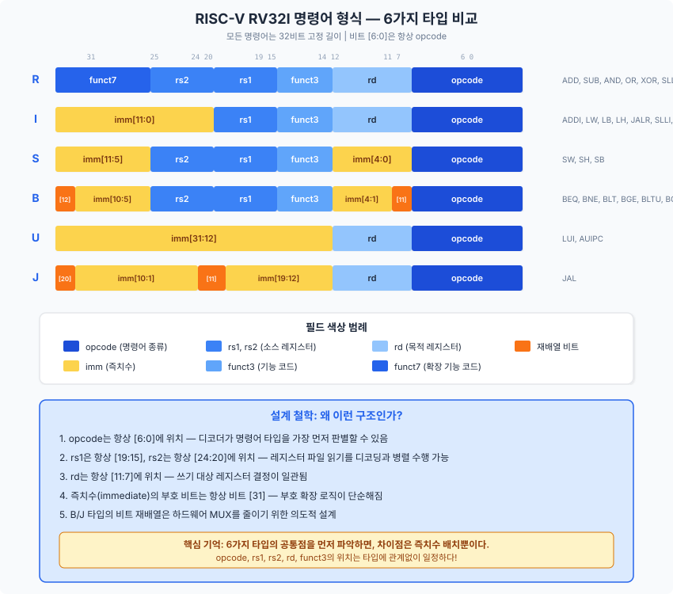

이 챕터에서는 RISC-V ISA의 탄생 배경과 설계 철학을 살펴보고, 레지스터 파일, 메모리 모델, 그리고 6가지 명령어 형식의 구조를 학습합니다. 프로세서를 설계하기 전에 "무엇을 만들 것인가"를 명확히 이해하는 것이 이 챕터의 핵심 목표입니다.
프로세서를 설계한다는 것은 곧 명령어 집합 구조(ISA, Instruction Set Architecture)라는 "약속"을 구현하는 일입니다. ISA는 소프트웨어와 하드웨어 사이의 계약서와 같습니다. 소프트웨어 개발자는 ISA가 정의한 명령어를 사용하여 프로그램을 작성하고, 하드웨어 설계자는 그 명령어가 올바르게 동작하도록 회로를 구현합니다. 이 챕터에서는 우리가 구현할 ISA, 즉 RISC-V에 대해 깊이 이해하는 시간을 가질 것입니다.
컴퓨터 아키텍처의 역사는 크게 두 가지 철학의 대립으로 요약할 수 있습니다. CISC(Complex Instruction Set Computer)는 "하나의 명령어가 가능한 많은 일을 하게 하자"는 접근입니다. x86 아키텍처가 대표적이며, 문자열 복사, 루프 카운터 감소와 분기를 동시에 수행하는 명령어 등 수천 가지의 복잡한 명령어를 제공합니다.
반면 RISC(Reduced Instruction Set Computer)는 "명령어를 단순하게 유지하고, 그 대신 빠르게 실행하자"는 철학입니다. 각 명령어가 한 가지 일만 수행하므로 하드웨어 구현이 단순해지고, 파이프라이닝(pipelining)에 유리합니다. ARM, MIPS, 그리고 우리가 다룰 RISC-V가 이 계열에 속합니다.
RISC-V(리스크 파이브라고 읽습니다)는 2010년 미국 UC 버클리(University of California, Berkeley)의 크르스테 아사노비치(Krste Asanovic) 교수와 데이비드 패터슨(David Patterson) 교수 연구팀에서 시작되었습니다. 패터슨 교수는 RISC 아키텍처의 창시자 중 한 명이자 컴퓨터 아키텍처 교과서의 저자로 유명하며, RISC-V는 버클리에서 개발한 다섯 번째 RISC 아키텍처라는 의미입니다.
기존의 상용 ISA들은 심각한 문제를 안고 있었습니다. x86은 인텔의 독점 자산이고, ARM은 고액의 라이선스 비용을 요구하며, MIPS는 특허 문제로 자유로운 사용이 어려웠습니다. 학술 연구나 교육 목적으로 프로세서를 설계하려면, ISA 자체가 자유롭게 사용 가능해야 합니다. 이러한 필요에서 RISC-V는 오픈 소스 ISA로 탄생했습니다.
RISC-V는 단순히 "무료"인 것 이상의 의미를 가집니다. RISC-V International이라는 비영리 재단이 표준을 관리하며, 누구든 라이선스 비용 없이 RISC-V 프로세서를 설계하고, 제조하고, 판매할 수 있습니다. 이는 마치 C 프로그래밍 언어의 표준처럼, 누구나 컴파일러를 만들 수 있는 개방형 표준과 같습니다. 2024년 현재 RISC-V는 산업계에서도 빠르게 채택되고 있으며, 중국의 반도체 산업, 유럽의 자동차 반도체, 그리고 임베디드 IoT 분야에서 특히 주목받고 있습니다.
RISC-V의 가장 혁신적인 특징은 모듈형 ISA(Modular ISA) 구조입니다. x86이나 ARM처럼 수천 개의 명령어가 하나의 거대한 덩어리로 묶여 있는 것이 아니라, RISC-V는 기본 정수 ISA(Base Integer ISA) 위에 필요한 확장(Extension)을 선택적으로 추가하는 방식입니다.

RV32I의 "RV"는 RISC-V를, "32"는 레지스터와 주소 버스의 비트 폭을, "I"는 기본 정수(Integer) 명령어 세트를 의미합니다. RV32I는 47개의 명령어만으로 구성되어 있으며, 이것만으로도 범용 컴퓨터에 필요한 모든 정수 연산을 수행할 수 있습니다. 실제로 GCC 컴파일러는 RV32I만으로 C 프로그램을 컴파일할 수 있으며, 곱셈이나 나눗셈은 소프트웨어 라이브러리로 대체됩니다.
주요 표준 확장은 다음과 같습니다:
| 확장 | 이름 | 설명 | 이 책에서의 다루기 |
|---|---|---|---|
I |
기본 정수 | 산술, 논리, 분기, 로드/스토어 (47개 명령어) | 전체 구현 (Ch02~Ch22) |
M |
곱셈/나눗셈 | MUL, DIV, REM 등 8개 명령어 | 선택 구현 (Ch24) |
A |
원자 연산 | LR, SC, AMO 등 멀티코어용 동기화 | 개념 소개 (Ch25) |
F |
단정밀도 부동소수점 | 32비트 IEEE 754 부동소수점 | 개요만 (Ch24) |
D |
배정밀도 부동소수점 | 64비트 IEEE 754 부동소수점 | 언급만 |
Zicsr |
CSR 접근 | 제어/상태 레지스터 읽기/쓰기 | 전체 구현 (Ch18) |
이들을 조합한 RV32G(= RV32IMAFDZicsr_Zifencei)는 리눅스를 실행할 수 있는 범용(General-purpose) 조합이지만,
이 책에서는 RV32I + Zicsr을 핵심 구현 범위로 삼습니다.
47개의 기본 명령어와 CSR 접근 명령어만으로도 완전한 파이프라인 프로세서를 설계하고 FPGA에서 C 프로그램을 실행하는 데 충분합니다.
프로세서의 핵심 자원 중 하나는 레지스터 파일(Register File)입니다. 레지스터는 프로세서 내부에 위치한 초고속 저장 장치로, ALU가 연산을 수행할 때 피연산자(operand)를 가져오고 결과를 저장하는 곳입니다. 메모리 접근이 수 사이클에서 수백 사이클이 걸리는 반면, 레지스터 접근은 단 1사이클이면 충분합니다. 따라서 프로세서 설계에서 레지스터 파일의 구조를 이해하는 것은 데이터패스(datapath) 설계의 첫걸음입니다.
RV32I는 32개의 32비트 범용 레지스터(General-Purpose Register)를 제공합니다.
이 레지스터들은 x0부터 x31까지 번호가 매겨져 있으며,
명령어 내에서 5비트(25 = 32)로 인코딩됩니다.
32개 레지스터 중 x0는 특별합니다. 이 레지스터는 항상 0을 반환하도록 하드웨어적으로 고정(hardwired)되어 있습니다.
x0에 어떤 값을 쓰더라도 무시되며, 읽으면 언제나 0x00000000이 나옵니다.
이것이 왜 유용할까요? 상수 0은 프로그래밍에서 매우 자주 사용됩니다. 예를 들어:
add x5, x0, x0은 x5를 0으로 설정합니다 (0 + 0 = 0).add x5, x6, x0은 x6의 값을 x5에 복사합니다 (x6 + 0 = x6).add x0, x1, x2는 덧셈을 수행하지만 결과를 버립니다 (x0에 쓰기는 무시됨).addi x0, x0, 0은 아무 일도 하지 않는 명령어(NOP)로 사용됩니다.하드와이어드 제로 레지스터 덕분에 별도의 "0을 만드는" 명령어가 필요 없으며, 기존 명령어를 조합하여 다양한 의사 명령어(pseudo-instruction)를 구현할 수 있습니다. 이는 ISA를 단순하게 유지하면서도 표현력을 높이는 RISC-V의 핵심 설계 기법입니다.
하드웨어 관점에서 32개 레지스터는 단순히 x0~x31이라는 번호를 가진 저장소일 뿐입니다.
하지만 소프트웨어 세계에서는 이 레지스터들에 ABI(Application Binary Interface) 이름이라는 별명을 부여합니다.
ABI란 무엇일까요? ABI는 "소프트웨어가 레지스터를 부르는 별명"입니다. 더 정확히 말하면, 서로 다른 컴파일러나 라이브러리가 함수를 호출할 때 "어떤 레지스터에 인수를 넣고, 어떤 레지스터로 결과를 돌려받을 것인가"를 합의한 규약입니다. 하드웨어는 ABI를 전혀 신경 쓰지 않습니다. 이는 순전히 소프트웨어 컨벤션(convention)입니다. 그러나 프로세서 설계자도 ABI를 이해해야 하는 이유가 있습니다: 디버깅할 때 어셈블리 코드를 읽어야 하기 때문입니다.

핵심 ABI 레지스터를 요약하면 다음과 같습니다:
zero (x0): 항상 0. 위에서 설명한 하드와이어드 제로.ra (x1): 복귀 주소(Return Address). 함수 호출 시 돌아올 주소를 저장합니다.sp (x2): 스택 포인터(Stack Pointer). 함수의 지역 변수 영역을 가리킵니다.a0~a7 (x10~x17): 함수 인수(Arguments)와 반환값(Return Value). a0과 a1은 반환값으로도 사용됩니다.s0~s11 (x8~x9, x18~x27): 저장 레지스터(Saved Registers). 함수 호출 전후로 값이 보존되어야 합니다.t0~t6 (x5~x7, x28~x31): 임시 레지스터(Temporaries). 함수 호출 시 값이 보존되지 않을 수 있습니다.
프로그램 카운터(PC, Program Counter)는 "현재 실행 중인 명령어의 주소"를 저장하는 특수 레지스터입니다.
PC는 범용 레지스터가 아닙니다. x0~x31과는 별도로 존재하며,
소프트웨어가 일반 명령어로 직접 읽거나 쓸 수 없습니다.
PC는 하드웨어에 의해 자동으로 관리됩니다: 일반적으로 매 사이클마다 PC = PC + 4로 갱신되며(명령어 크기가 4바이트이므로),
분기(branch)나 점프(jump) 명령어가 실행될 때만 다른 주소로 변경됩니다.
이것은 x86과의 중요한 차이점입니다. x86에서는 프로그램 카운터(EIP/RIP)를 범용 레지스터처럼 직접 조작할 수 있는 명령어가 있지만,
RISC-V에서 PC 값에 접근하는 유일한 방법은 AUIPC(PC 상대 주소 계산)나 JAL(점프 시 PC+4를 저장) 같은 특정 명령어를 사용하는 것입니다.
이러한 제한은 파이프라인 설계를 단순하게 만들어 줍니다.
프로세서는 레지스터만으로는 충분하지 않습니다. 32개의 레지스터에 저장할 수 있는 데이터는 128바이트(32 × 4바이트)에 불과하므로, 프로그램 코드와 대량의 데이터는 메모리(Memory)에 저장해야 합니다. 이 절에서는 RV32I가 메모리를 어떻게 바라보는지, 즉 메모리 모델(Memory Model)을 학습합니다. 메모리 모델을 이해하는 것은 로드(load)/스토어(store) 명령어의 동작을 정확히 파악하고, 나아가 Chapter 05에서 메모리 서브시스템을 설계하는 데 필수적인 기초입니다.
RV32I에서 메모리의 기본 단위는 바이트(Byte, 8비트)입니다. 모든 메모리 주소는 하나의 바이트를 가리킵니다. 이를 바이트 주소 지정(Byte Addressing)이라고 합니다. 32비트 주소 버스를 사용하므로, 이론상 최대 232 = 4,294,967,296개의 바이트, 즉 4GB의 주소 공간을 가집니다.
32비트 워드(word)를 하나 읽으려면 4개의 연속된 바이트를 읽어야 합니다.
예를 들어, 주소 0x100에서 워드를 읽으면 0x100, 0x101, 0x102, 0x103 네 바이트가 한꺼번에 읽힙니다.
이때 이 4바이트가 32비트 워드로 어떤 순서로 조합되는지가 바로 "엔디언(endianness)" 문제입니다.
엔디언(Endianness)이란 멀티바이트 데이터를 메모리에 저장할 때 바이트의 순서를 결정하는 규칙입니다. RISC-V는 리틀 엔디언(Little-Endian) 방식을 사용합니다. 이는 최하위 바이트(LSB, Least Significant Byte)가 가장 낮은 주소에 저장되는 방식입니다.
구체적인 예를 들어 보겠습니다. 32비트 값 0x12345678을 주소 0x00에 저장한다고 합시다:
| 주소 | 0x00 | 0x01 | 0x02 | 0x03 |
|---|---|---|---|---|
| 저장 값 | 0x78 (LSB) |
0x56 |
0x34 |
0x12 (MSB) |
리틀 엔디언은 x86에서도 사용되는 방식이므로, 대부분의 소프트웨어 도구와의 호환성이 좋습니다.
또한 하드웨어 관점에서 리틀 엔디언은 8비트, 16비트, 32비트 접근 시 시작 주소가 동일하다는 장점이 있습니다.
예를 들어 주소 0x00에서 바이트를 읽으면 0x78, 하프워드를 읽으면 0x5678, 워드를 읽으면 0x12345678을 얻습니다.
세 경우 모두 시작 주소가 0x00으로 같으므로, 주소 계산 로직이 단순해집니다.
정렬(Alignment)이란 데이터의 시작 주소가 데이터 크기의 배수인지를 따지는 규칙입니다. RV32I 기본 스펙에서 정렬 요구사항은 다음과 같습니다:
| 접근 유형 | 크기 | 정렬 조건 | 예시 |
|---|---|---|---|
| 바이트 (LB/SB) | 1바이트 | 제한 없음 | 모든 주소 가능 |
| 하프워드 (LH/SH) | 2바이트 | 2의 배수 | 0x00, 0x02, 0x04, ... |
| 워드 (LW/SW) | 4바이트 | 4의 배수 | 0x00, 0x04, 0x08, ... |
| 명령어 인출(Fetch) | 4바이트 | 4의 배수 | PC는 항상 4의 배수 |
정렬되지 않은 접근(misaligned access)을 시도하면 예외(exception)가 발생합니다.
예를 들어, 주소 0x03에서 LW(워드 로드)를 실행하면 정렬 위반 예외가 발생하며,
이 예외 처리는 Chapter 19에서 다루게 됩니다.
하드웨어 설계 관점에서 정렬 요구사항은 메모리 인터페이스를 단순하게 만들어 줍니다.
워드 접근이 항상 4의 배수 주소에서 시작한다면, 메모리 뱅크 선택 로직이 간단해지기 때문입니다.

4GB의 주소 공간을 실제로 어떻게 활용할 것인가는 메모리 맵(Memory Map)으로 정의합니다. 일반적인 RISC-V 시스템에서는 주소 공간을 다음과 같이 분할합니다:
이 책에서 구현할 Basys 3 FPGA 시스템의 실제 메모리 크기는 4GB보다 훨씬 작습니다. Basys 3의 BRAM(Block RAM)은 총 약 225KB이므로, IMEM과 DMEM을 합쳐 수십 KB 수준으로 설계합니다. 메모리 맵의 구체적인 설계는 Chapter 05에서 다룹니다.
이제 RV32I의 핵심에 도달했습니다. 프로세서가 실행하는 모든 명령어는 32비트 이진수로 표현되며, 이 32비트 안에 "어떤 연산을 할 것인가", "어떤 레지스터를 사용할 것인가", "즉치수(상수)는 무엇인가"라는 모든 정보가 담겨 있습니다. RV32I는 이 32비트를 구성하는 방법을 6가지 명령어 타입으로 정의합니다: R, I, S, B, U, J 타입입니다.
"6가지나 외워야 한다고?" 하고 불안해질 수 있지만, 걱정하지 마십시오. 6가지 타입은 서로 상당 부분이 공통되며, 차이점은 주로 즉치수(Immediate) 필드의 배치에 있습니다. 공통 패턴을 먼저 파악하면, 나머지는 자연스럽게 따라옵니다.
6가지 타입 모두에서 공통으로 나타나는 필드와 그 위치는 다음과 같습니다:
| 필드 | 비트 위치 | 크기 | 역할 |
|---|---|---|---|
opcode |
[6:0] | 7비트 | 명령어 종류 식별 (모든 타입에 존재) |
rd |
[11:7] | 5비트 | 목적 레지스터 (R, I, U, J 타입) |
funct3 |
[14:12] | 3비트 | 기능 코드 (R, I, S, B 타입) |
rs1 |
[19:15] | 5비트 | 소스 레지스터 1 (R, I, S, B 타입) |
rs2 |
[24:20] | 5비트 | 소스 레지스터 2 (R, S, B 타입) |
funct7 |
[31:25] | 7비트 | 확장 기능 코드 (R 타입에서 주로 사용) |
이 표에서 주목할 점은 opcode, rd, rs1, rs2의 위치가 타입에 관계없이 일정하다는 것입니다.
이 일관성 덕분에 하드웨어 디코더는 명령어 타입을 판별하기 전에도 레지스터 번호를 추출할 수 있으며,
이는 파이프라인 설계에서 디코딩과 레지스터 읽기를 병렬로 수행하는 데 핵심적인 역할을 합니다.

R 타입 (Register-Register)
R 타입은 두 레지스터의 값으로 연산하여 결과를 레지스터에 저장하는 형식입니다.
ADD, SUB, AND, OR, XOR, SLL(왼쪽 시프트),
SRL(논리 오른쪽 시프트), SRA(산술 오른쪽 시프트), SLT(비교), SLTU(부호 없는 비교) 등이 이 형식에 해당합니다.
funct7과 funct3의 조합으로 연산 종류를 결정합니다.
예를 들어, ADD와 SUB는 funct3이 같지만(000) funct7이 다릅니다(0000000 vs 0100000).
즉치수(immediate)가 없으므로, 32비트가 온전히 레지스터 번호와 기능 코드에 사용됩니다.
I 타입 (Immediate)
I 타입은 하나의 소스 레지스터와 12비트 즉치수(immediate)로 연산하는 형식입니다.
ADDI, ANDI, ORI, XORI 등의 산술/논리 연산,
LW, LH, LB 등의 로드(load) 명령어,
그리고 JALR(레지스터 간접 점프)이 이 형식을 사용합니다.
12비트 즉치수는 부호 확장(Sign Extension)되어 32비트로 확장됩니다.
즉, 비트 [31](최상위 비트)이 1이면 상위 20비트가 모두 1로 채워지고, 0이면 0으로 채워집니다.
이를 통해 -2048 ~ +2047 범위의 정수를 표현할 수 있습니다.
S 타입 (Store)
S 타입은 스토어(store) 명령어 전용 형식입니다. SW, SH, SB가 이에 해당합니다.
S 타입이 I 타입과 다른 점은 rd 필드가 없다는 것입니다.
스토어 명령어는 레지스터의 값을 메모리에 쓰는 것이므로, 결과를 레지스터에 저장할 필요가 없습니다.
대신 rd 필드의 위치([11:7])를 즉치수의 하위 5비트로 사용합니다.
즉치수의 상위 7비트는 [31:25]에 위치하므로, 12비트 즉치수가 두 조각으로 나뉘어 배치됩니다.
이렇게 쪼개진 이유는 rs1과 rs2 필드의 위치를 R/I 타입과 동일하게 유지하기 위함입니다.
B 타입 (Branch)
B 타입은 조건 분기(conditional branch) 명령어 전용입니다.
BEQ(같으면 분기), BNE(다르면 분기), BLT(작으면 분기),
BGE(크거나 같으면 분기), BLTU(부호 없는 비교), BGEU가 이에 해당합니다.
B 타입의 즉치수는 PC 상대 오프셋(PC-relative offset)을 나타내며, 분기 대상 주소 = PC + 즉치수로 계산됩니다.
주목할 점은 즉치수의 최하위 비트(bit 0)가 인코딩에 포함되지 않는다는 것입니다.
모든 명령어가 4바이트 정렬이므로, 분기 오프셋은 항상 2의 배수이기 때문입니다.
따라서 12비트의 인코딩으로 실제로는 13비트 범위(-4096 ~ +4094 바이트)의 분기를 표현할 수 있습니다.
B 타입에서 즉치수의 비트 순서가 다소 복잡하게 재배열(reordering)되어 있는데, 이는 하드웨어의 즉치수 추출 MUX를 최소화하기 위한 의도적인 설계 결정입니다. 구체적인 비트 배치는 Chapter 03에서 각 명령어를 상세 분석할 때 다시 다루겠습니다.
U 타입 (Upper Immediate)
U 타입은 20비트의 상위 즉치수(upper immediate)를 제공합니다.
LUI(Load Upper Immediate)와 AUIPC(Add Upper Immediate to PC) 두 명령어만 이 형식을 사용합니다.
20비트 즉치수는 32비트 값의 상위 20비트([31:12])에 배치되고, 하위 12비트는 0으로 채워집니다.
이를 ADDI와 조합하면 임의의 32비트 상수를 생성할 수 있습니다.
예를 들어, 0x12345678이라는 상수를 레지스터에 로드하려면:
LUI x5, 0x12345 — x5에 0x12345000을 로드ADDI x5, x5, 0x678 — x5에 0x678을 더해 0x12345678 완성J 타입 (Jump)
J 타입은 무조건 점프(unconditional jump) 명령어 전용으로, JAL(Jump And Link) 한 명령어만 이 형식을 사용합니다.
20비트 즉치수가 제공되며, B 타입과 마찬가지로 최하위 비트(bit 0)는 인코딩에 포함되지 않습니다.
따라서 21비트 범위(약 ±1MB)의 점프가 가능합니다.
JAL은 점프하면서 동시에 복귀 주소(PC+4)를 rd 레지스터에 저장합니다.
이것이 함수 호출의 기반이 됩니다.
6가지 타입 모두에서 즉치수의 부호 비트(sign bit)는 항상 명령어의 비트 [31]에 위치합니다. 이는 RISC-V의 중요한 설계 원칙 중 하나로, 부호 확장 로직을 매우 단순하게 만들어 줍니다. 하드웨어에서는 비트 [31]을 확인한 후, 필요한 만큼 상위 비트를 같은 값으로 채우기만 하면 됩니다. 이 단순함이 Chapter 04에서 설계할 즉치수 생성기(Immediate Generator)의 핵심 원리입니다.
이론만으로는 명령어 형식이 와닿지 않을 수 있습니다. 이 절에서는 실제 명령어 3개를 직접 인코딩하고 디코딩하는 미니 실습을 진행합니다. 연필과 종이를 준비하고, 각 단계를 직접 따라해 보십시오. 프로세서 하드웨어가 매 사이클 수행하는 작업을 사람이 손으로 해 보는 것이므로, 이 실습을 마치면 디코더의 동작을 직관적으로 이해할 수 있게 될 것입니다.
ADD x5, x6, x7은 "x6과 x7을 더한 결과를 x5에 저장"하는 R 타입 명령어입니다. 단계별로 인코딩해 봅시다.
1단계: 명령어 타입과 opcode 결정
ADD는 레지스터-레지스터 연산이므로 R 타입입니다.
R 타입 산술 연산의 opcode는 0110011 (10진수 51)입니다.
2단계: 레지스터 번호를 이진수로 변환
rd = x5 = 00101rs1 = x6 = 00110rs2 = x7 = 001113단계: 기능 코드 확인
funct3 = 000 (ADD/SUB의 funct3)funct7 = 0000000 (ADD는 0, SUB는 0100000)4단계: 32비트 조립
| funct7 [31:25] | rs2 [24:20] | rs1 [19:15] | funct3 [14:12] | rd [11:7] | opcode [6:0] |
|---|---|---|---|---|---|
0000000 |
00111 |
00110 |
000 |
00101 |
0110011 |
연결하면: 0000000 00111 00110 000 00101 0110011
16진수로 변환: 0x007302B3
ADDI x10, x0, 42는 "x0(=0)에 42를 더해 x10에 저장", 즉 x10 = 42로 초기화하는 I 타입 명령어입니다.
1단계: 명령어 타입과 opcode 결정
ADDI는 I 타입이며, opcode는 0010011 (10진수 19)입니다.
2단계: 필드 값 결정
imm[11:0] = 42 = 000000101010 (12비트)rs1 = x0 = 00000funct3 = 000 (ADDI의 funct3)rd = x10 = 010103단계: 32비트 조립
| imm[11:0] [31:20] | rs1 [19:15] | funct3 [14:12] | rd [11:7] | opcode [6:0] |
|---|---|---|---|---|
000000101010 |
00000 |
000 |
01010 |
0010011 |
연결하면: 000000101010 00000 000 01010 0010011
16진수로 변환: 0x02A00513
참고로, 이 명령어는 의사 명령어(pseudo-instruction) LI x10, 42 (Load Immediate)로도 표기됩니다.
어셈블러는 LI를 자동으로 ADDI x10, x0, 42로 변환합니다.
이번에는 반대로, 주어진 32비트 이진 패턴으로부터 어셈블리 명령어를 복원해 보겠습니다.
0x00628463을 이진수로 변환하면:
0000 0000 0110 0010 1000 0100 0110 0011
필드 단위로 분리하면:
1단계: opcode 확인 [6:0]
1100011 = 99(10진수). 이것은 B 타입(분기 명령어)의 opcode입니다.
2단계: funct3 확인 [14:12]
000 = BEQ(같으면 분기)입니다.
3단계: 레지스터 확인
rs1 [19:15] = 00101 = x5rs2 [24:20] = 00110 = x64단계: 즉치수 조립
B 타입의 즉치수 비트 배치를 기억합시다: 비트 [31] = imm[12], 비트 [30:25] = imm[10:5], 비트 [11:8] = imm[4:1], 비트 [7] = imm[11].
0000001000
조립하면: imm = 0_0_000000_1000_0 = 0x00000010(2진) = 0x00000010... 아닙니다, 비트를 정렬합시다.
imm[12:0] = 0 0 000000 1000 0 = 0000000010000(2진) = 16(10진).
즉, 분기 대상 주소는 PC + 8 입니다.
최종 결과:
BEQ x5, x6, 8 — "x5와 x6이 같으면, 현재 PC에서 8바이트 앞으로 분기"
이 챕터에서는 RISC-V ISA의 전체적인 구조를 조감(bird's-eye view)하였습니다. 프로세서 구현에 앞서 "무엇을 만들어야 하는가"를 명확히 이해하는 것이 이 챕터의 목적이었으며, 핵심 개념들을 다시 한번 정리하겠습니다.
ADDI x15, x0, -1을 32비트 16진수로 인코딩하십시오. (힌트: -1의 12비트 2의 보수 표현은 111111111111)0xCAFEBABE를 리틀 엔디언으로 주소 0x200에 저장할 때, 주소 0x200~0x203 각각에 저장되는 바이트 값을 쓰십시오.